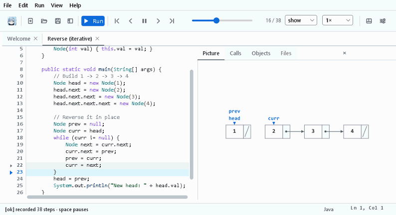

Raphael
See your Java program's data structures change while it runs. Paste a program, press Run, and step through it as a picture.

Free and open source (MIT License). Java is included, so there's nothing else to install. Your code never leaves your computer.
Your own code
Any single-file Java program: paste it, open it, or drop it on the window.
Textbook pictures
Arrays, grids, linked lists, binary trees, B-trees, tries, Java's collections and your own objects.
Every step, both ways
Play at any speed, step forward and back, skip or finish calls, or jump to a line.
What the next line will do
i and j markers under the cells they index, and outlines on the cells each line reads and writes.
Problems explained
Compile errors, crashes, missing input, endless loops and runaway recursion, at the right line.
Windows, macOS and Linux
Native installers, the system's own file dialogs, light and dark themes, and full keyboard control.